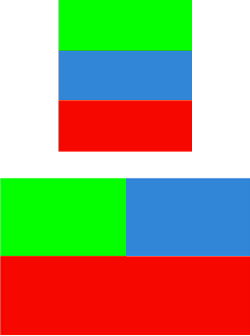
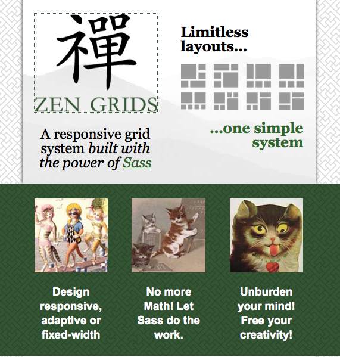

ESTRATEGIA MULTIDISPOSITIVO
App móvil
vs
Web móvil
m.dominio.com
vs
Estrategia "responsive"
ESTRATEGIA MULTIDISPOSITIVO
App móvil
vs
Web móvil
m.dominio.com
vs
Estrategia "responsive"
¿Qué és el Responsive Web Design?
ETHAN MARCOTTE
A List Apart, 2010- MEDIA QUERIES
- REJILLAS (GRID) FLUIDOS O LÍQUIDOS
- IMÁGENES FLEXIBLES
¿Qué és el Responsive Web Design?
1. MEDIA QUERIES
@media all and (min-width: 320px) {
.col { background-color: green }
.co2 { background-color: blue}
.co3 { background-color: red}
}
@media all and (min-width: 768px) {
.col1 { float: left; width: 50% }
.col2 { float: left; width: 50% }
.col3 { clear:both }
}

¿Qué és el Responsive Web Design?
2. REJILLAS (GRID) FLUIDOS O LÍQUIDOS

¿Qué és el Responsive Web Design?
3. IMÁGENES FLEXIBLES

Qué queremos decir hoy con "responsive"?
- ONE WEB
→ Misma información y servicios independientemente del dispositivo - Mismo contenido
- 1 único sitio / template
- 1 URL
- Contenido no duplicado
- 1 estrategia SEO
- → RESS (REsponsive & Server Side)
Diferentes estrategias según situación
1. Conversión de sitio web existente
2. Creación desde 0: Mobile first
Diferentes estrategias según situación
1. Conversión de sitio web existente
Diferentes estrategias según situación
1. Conversión de sitio web existente
- Relativamente rápido
- Familiar para el desarrollador
- Más barato
- Olvida experiencia usuario
- Peor performance
- Peor soporte
- Parche para salir del paso
Diferentes estrategias según situación
1. Conversión de sitio web existente
- Página a página
- Componente a componente
Diferentes estrategias según situación
1. Conversión de sitio web existente
- Visible inmediatamente
- Más probabilidad de publicación
- Introducción gradual
- Sin consistencia
- Quedarse a medio camino
- Coexistencia técnica
Diferentes estrategias según situación
2. Creación desde 0: Mobile first

Diferentes estrategias según situación
2. Creación desde 0: Mobile first
- A. Diseño propio
→ posibilidad de adaptar soluciones ya existentes
- B. Diseño externo
→ movimiento limitado→ mucha personalización
Diferentes estrategias según situación
2. Creación desde 0: Mobile first
- Inicio limpio
- Priorizamos contenido y funcionalidad
- Mejor performance
- Future friendly
- Tiempo requerido
- Desafío mental
- Difícil
- Nuevo, no familiar
RWD en Drupal
- Menús
- Imágenes responsive/flexibles
- Vídeos/iframes responsive/flexibles
- Tablas responsive
- Sistemas de Grids
- Themes Drupal existentes
- Components
Menús: Módulos existentes
Poco esfuerzo == Opción barata
Menús: Opciones personalizadas
Mayor esfuerzo == Opción cara
- Cómo?
- template.php
- JavaScript
Menús: Opciones personalizadas
template.php (theme_menu_link()
function theme_menu_link(array $variables) {
$element = $variables['element'];
$sub_menu = '';
if ($element['#below']) {
$sub_menu = drupal_render($element['#below']);
}
$output = l($element['#title'], $element['#href'], $element['#localized_options']);
return '<li' . drupal_attributes($element['#attributes']) . '>'
. $output . $sub_menu . "</li>\n";
}
Menús: Opciones personalizadas
template.php - theme_menu_tree()
function theme_menu_tree($variables) {
return '<ul class="menu">' . $variables['tree'] . '</ul>';
}
Menús: Opciones personalizadas
Drupal.behaviors.rwdmenu = {
attach: function(context, settings) {
function RWDMenu(){
if (($(this).width() < 768) && ($('#main-menu .show-menu').length == 0)) {
$('#main-menu').prepend('<a href="javascript:;" class="show-menu"
title="'+ Drupal.t('Show menu')+'">Menu</a>');
$('#main-menu ul').addClass("hide");
$('#main-menu a.show-menu', context).click(function() {
$('#main-menu ul').toggleClass('hide show');
});
}
else if (($(this).width() > 768) && ($('#main-menu .show-menu').length != 0)) {
$('#main-menu .show-menu').remove();
$('#main-menu ul').removeClass('hide');
}
}
$(window).bind('resize orientationchange', function() {
RWDMenu();
});
RWDMenu();
}
};
})(jQuery, Drupal, this, this.document);
Imágenes flexibles/responsive
- Adaptative image (D7)
- Picture + Breakpoints (D7 & D8)
¿Qué es Picture?
- Etiquetas SPAN que funcionan como <picture> HTML5
- http://www.w3.org/TR/html-picture-element/
¿Qué es Picture?
<div class="field-item even" rel="og:image rdfs:seeAlso"
resource="teaser_mb.png">
<span data-picture="">
<span data-src="teaser_mb.png" data-width="600" data-height="400"></span>
<span data-media="(min-width: 0px) and (max-width: 49.99em)" data-src="teaser_mb.png" data-width="600" data-height="400"></span>
<span data-media="(min-width: 50em) and (max-width: 61.19em)" data-src="teaser_narrow.png" data-width="1000" data-height="500"></span>
<span data-media="(min-width: 61.2em)" data-src="teaser_desktop.png" data-width="1000" data-height="200"></span>
<noscript>
<img typeof="foaf:Image" src="teaser_mb.png" width="600" height="400" alt="" />
</noscript>
</span>
</div>
¿Qué es Breakpoints?
- Importación / creación de mediaqueries
- Incluyendo multiplicadores (x1.5 ,x2)
- Agrupados
- Exportables (Archivos .yml)
¿Cómo se combinan?
- Creación Breakpoints
- Creación Grupos Breakpoints
- Creación ImageStyles
- Configuración de Picture con Grupos de Breakpoint
- Aplicación Picture (display)
1.- Creación Breakpoints
2.- Creación Grupos Breakpoints
3.- Creación ImageStyles
4.- Configuración de Picture con Grupos de Breakpoint
5.- Aplicación Picture (display)
Vídeos responsive
Tablas responsive
Módulos existentes (Opción barata)
Tablas responsive
Módulos existentes (Opción barata)
- FooTable
- Responsive Tables
Opción compleja muy configurable, todavía en dev
Tablas responsive
Opciones personalizadas (Opción cara)
- Fijación de cabecera
- Adaptación de la información...
Sistemas de Grids
Nos permiten definir y cambiar de layout «fácilmente»
(sin float, clear, overflow ...) en función de la mediquery
- 

Sistemas de Grids
Gemas de Ruby
- Con distintas versiones que pueden convivir juntas
- Gestionarlas con Ruby Version Manager
- Gestionarlas con Bundle
- Unos temas necesitan unas versiones concretas y otros otras...
Sistemas de Grids
Ejemplo gemfile
source "https://rubygems.org"
# Working stack for Zen, from https://drupal.org/node/2188263#comment-8567655
gem "sass", "3.2.14"
gem "compass", "0.12.3"
gem "zen-grids", "1.4"
gem "breakpoint", "2.0.7"
gem "susy", "2.0.0.alpha.4"
gem "sass-globbing"
gem "sassy-buttons"
$ gem install bundler
$ bundle install
Sistemas de Grids: Zen grids
Definición de una rejilla de tres columnas
<div id="content">
Contenido
</div>
<div class="region-sidebar-first">
Columna
</div>
Sistemas de Grids: Zen grids
Definición de una rejilla de tres columnas
$zen-column-count: 3;
$zen-gutter-width: 20px;
.sidebar-first {
.region-sidebar-first {
@include zen-grid-item(1, 1);
}
#content {
@include zen-grid-item(2, 2);
}
}
Sistemas de Grids: Zen grids
Definición de una rejilla de tres columnas
Contenido
Sistemas de Grids: Zen grids
Definición de una rejilla de tres columnas
<div id="content">
Contenido
</div>
<div class="region-sidebar-first">
Columna 1
</div>
<div class="region-sidebar-second">
<div class="block">
Bloque 1
</div>
<div class="block">
Bloque 2
</div>
<div class="block">
Bloque 3
</div>
<div class="block">
Bloque 4
</div>
<div class="block">
Bloque 5
</div>
<div class="block">
Bloque 6
</div>
</div>
Sistemas de Grids: Zen grids
Definición de una rejilla de tres columnas
.two-sidebars {
#content {
@include zen-grid-item(1, 1);
}
.region-sidebar-first {
@include zen-grid-item(2, 2);
}
.region-sidebar-second {
@include zen-grid-item(3, 1);
@include zen-nested-container();
@include zen-clear();
.block {
@include zen-grid-item-base();
}
.block:nth-child(3n+1) {
@include zen-grid-item(1, 1);
@include zen-clear();
}
.block:nth-child(3n+2) {
@include zen-grid-item(1, 2);
}
.block:nth-child(3n) {
@include zen-grid-item(1, 3);
}
}
}
Sistemas de Grids: Zen grids
Definición de una rejilla de tres columnas
Contenido
Sistemas de Grids: Susy
<div class="has-two-sidebars">
<div class="l-content">
Contenido
</div>
<div class="l-region--sidebar-first">
Columna 1
</div>
<div class="l-region--sidebar-second">
Columna 1
</div>
</div>
Sistemas de Grids: Susy
@import "susy"; // Susy Variables // Set consistent vertical and horizontal spacing units. $vert-spacing-unit: 20px; $horz-spacing-unit: 1em; // Define Susy grid variables mobile first. $total-columns: 4; $column-width: 4em; $gutter-width: $horz-spacing-unit; $grid-padding: 5px; $container-style: magic; $container-width: 1200px; // Susy Media Layouts @see http://susy.oddbird.net/guides/reference/#ref-media-layouts $tab: 44em 12; // At 44em use 12 columns. $desk: 70em 16; // At 70em use 16 columns.
Sistemas de Grids: Susy
.has-two-sidebars {
.l-content {
@include span-columns(8, 16);
@include push(4, 16);
}
.l-region--sidebar-first,
.l-region--sidebar-second {
@include span-columns(4, 16);
}
.l-region--sidebar-first {
@include pull(12, 16);
}
.l-region--sidebar-second {
@include omega;
clear: none;
}
}
Sistemas de Grids: Susy
Contenido
Sistemas de Grids: Susy
<div class="has-two-rightsidebars">
<div class="l-content">
Contenido
</div>
<div class="l-region--sidebar-first">
Columna 1
</div>
<div class="l-region--sidebar-second">
Columna 1
</div>
</div>
Sistemas de Grids: Susy
.has-two-rightsidebars {
.l-content {
@include span-columns(8, 12);
}
.l-region--sidebar-first,
.l-region--sidebar-second {
@include span-columns(4 omega, 12);
}
.l-region--sidebar-second {
clear: right;
}
}
Sistemas de Grids: Susy
Contenido
Themes Drupal existentes
- Zen
- Omega 4
- Bootstrap
- Foundation
Componentes
- Slides/Carruseles
- Flexslider «Demo»
Navegación táctil, Navegación con teclado, Animaciones configurables, Carrusel (varias slides por página). - Owl Carousel «Demo»
- Swiper «Demo»
- Flexslider «Demo»
- Tabs y accordion > no módulo, solo sanbox o soluciones custom
- Lightbox/colorbox > no es buena idea en mb
Herramientas para mobile sites
- Mobile Theme / Mobile Switch
Problemas con la Caché al hacer un theme solo para MB... http://dgo.to/1591208 http://dgo.to/mobile_switch - Context Mobile detect / Context breakpoint
Problemas con la caché al usar el contexto para dispositivos MB... http://dgo.to/1768556 - Soluciones
Usar Varnish para detectar el dispositivo (complejo)
No cachear la versión MB (bajo rendimiento)
Responsive en D8
- Admin: Responsive theme: Seven
- Admin: Toolbar
- Breakpoints in core
- Picture element (Responsive images)
- Display modes (Form modes & View Modes)
- Mejora significativa Front-end performance
- Miniminiza y agrupa recursos (JS y CSS)
- Mejora uso caché
Conclusiones
- Situación idónea Mobile First siempre
- Presupuesto reducido: sondear soluciones menos complejas
- No personalizar demasiado
- Crear diseño adaptado a la solución
- Tener en cuenta el nivel técnico del equipo según solución
- Estimar según esfuerzos requeridos (no es % ni un fijo)
<Gracias!>
Cristina Chumillas. Drupal Designer and Themer at Ymbra
@chumillas
Pako Garcia. Veggie Drupal Themer and Designer at Ymbra
@pakmanlh